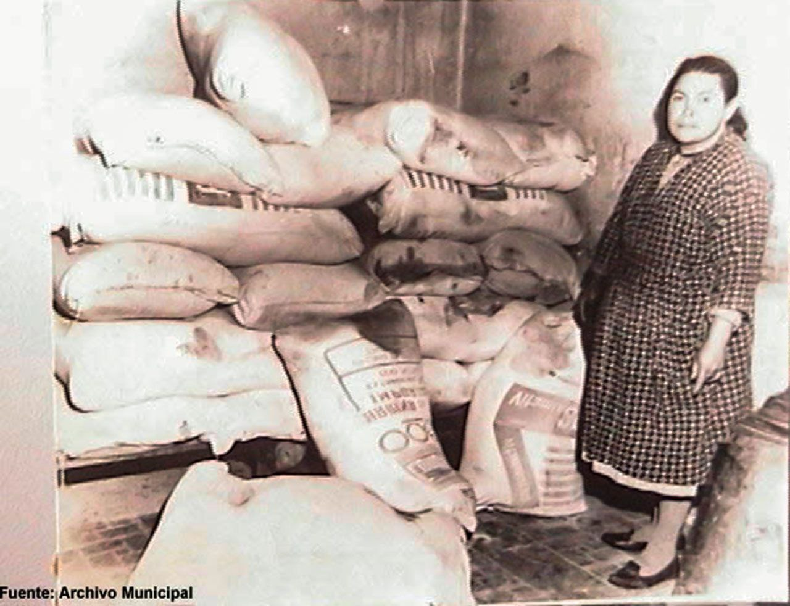
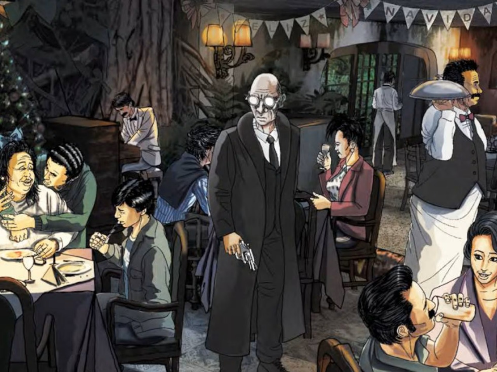

El envenenamiento en Chiquinquirá
Intoxicación masiva en Chiquinquirá, una de las tragedias más dolorosas de Boyacá.
Ver más
El restaurante de carne humana en La Calera
Un restaurante objeto de rumores y leyendas urbanas que llevaron a su cierre y a la desaparición de su dueño.
Ver más

La masacre del Pozzetto
Una masacre que permanece como uno de los episodios más enigmaticos de la historia urbana de Colombia.
Ver más